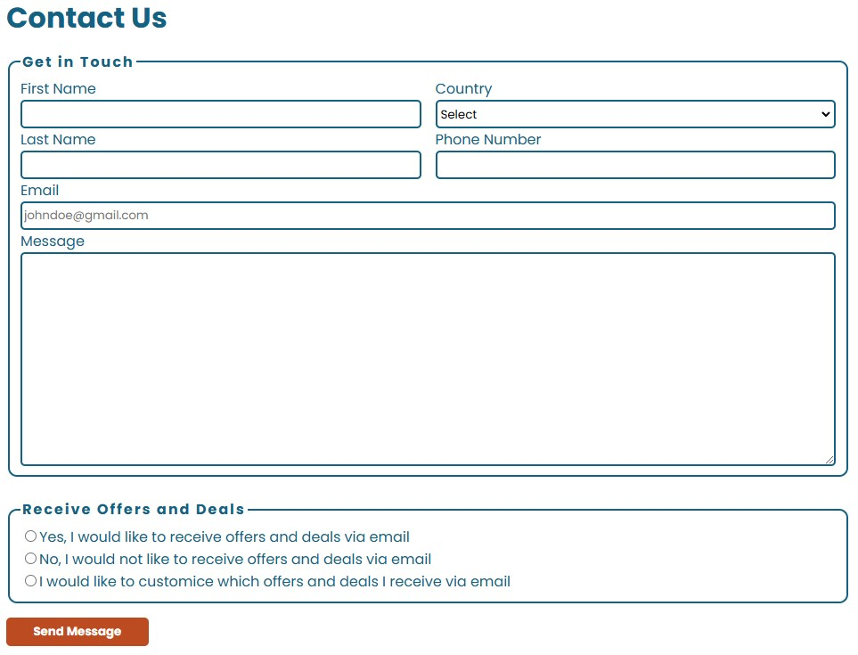
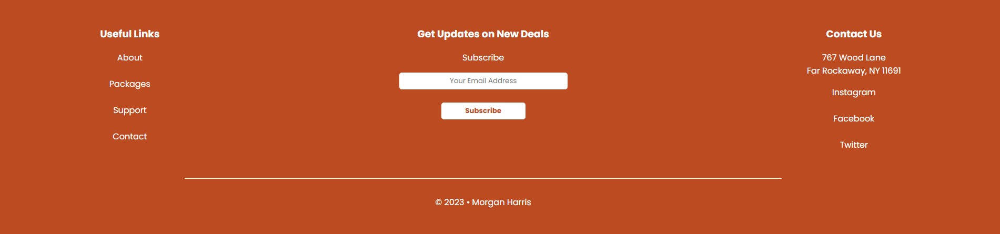

During my Web Essentials class during my time at UVU, I worked on a final project where I had to create a website for a travel agency from scratch. The project was built using only HTML and CSS, since it was a beginner-level course. Regardless, it still took a lot of time and effort since this was all very new to me at the time. Over the course of about three weeks, I completed the entire website by myself, with only the help of some instructional videos for guidance.
I had a couple of requirements that I needed to fulfil for this assignment. First, I needed to have a home page with a hero image and some sort of basic introduction to the website. There had to be a packages page featuring six different travel locations where users could "book" hotels and cars or check pricing, though the buttons were only visual and non-functional. I also needed to design a gallery page showcasing more pictures of the locations, a travel guide page that featured a video, and a contact page with various input fields and radio buttons. The website had to be responsive, so I used CSS media queries to ensure it was optimized for both desktop and mobile devices.
Since I did this assignment over a year ago, there are some things that I’m having a harder time remembering about the project. However, I do remember that a lot of the things that I needed to include didn’t cause me too much of a hassle, since I had prior practice doing all of these things from past assignments during the class. I believe I remember the hero image giving some issues, since I wasn’t as familiar with including one of those. I also remember having a bit of trouble with the input fields. I wanted to put the labels for each input field on top the box, rather than on the left side, and I had a bit of difficulty figuring that out. After a bit of rigorous googling, I was able to figure out that I needed to display the items as blocks so that I could stack it the way that I wanted to.
One specific element that caused me a lot of grief at the time was the footer. I was dead set on creating a really nice-looking footer that looked similar to how most normal websites footers look. I’m not entirely sure why I was so caught up on this footer, but I’m really glad that I did because I think it turned out really nicely. I ended up figuring out to be able to make it look like how I wanted was that I needed to create three different division sections and put the content I wanted to include in each division depending on which column I wanted them to be in. I divided it into three columns, displayed each section in blocks, and then designed the rest from there. I only had this headache for the desktop version of the site, for the mobile I only needed to stack everything vertically, so it wasn’t really as much of a challenge.
Overall, I’m pretty proud of this project since this was the first larger project that I had relating to development. Looking back on a lot of things now, there are many things that I would do differently. Stylistically, I would have made the logo and text up in the top left corner a lot smaller, and I would have chosen a different generic logo that fit the theme better. I think I also would have designed the navigation bar differently, as in I would probably make it colored rather than white to match the rest of the site, to give it a bit more separation. I also would have made the margins along the sides narrower and made the hero image span the whole width of the page. I would have made the gallery a lot wider and included more images as well. Although there are a lot of changes that I would make now knowing more about development as well as design, I’m still really happy with the outcome of this project since it was the first full “website” I ever made.